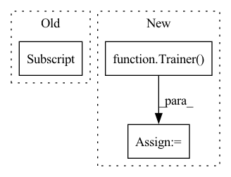

Pattern ID :22682

Before Change
// Build necessary components
train_loader = get_loader(config["data"], "train")
if config["data"]["overfit"]:
val_loader = get_loader(config["data"], "train")
else:
val_loader = get_loader(config["data"], "val")
After Change
write_json(config, path_to_run / "config.json")
// Build trainer and start training
trainer = Trainer(
train_loader, val_loader, model, criterion, optim, scheduler, device, config,
path_to_run, epoch, metric_start_val
)
trainer.run()
if __name__ == "__main__":
In pattern: SUPERPATTERN
Frequency: 3
Non-data size: 3
Instances
Fragment ID: 72030905
Project Name: bwittmann/transoar
Commit Name: 943b60f71cbfae5fcb65729b42c3b9464b433db2
Time: 2021-11-29
Author: bastian.wittmann@tum.de
File Name: scripts/train.py
M Class Name: AnonimousClass
N Class Name: AnonimousClass
M Method Name: train(2)
N Method Name: train(1)
M Parent Class:
N Parent Class:
M File Name: scripts/train.py
N File Name: scripts/train.py
M Start Line: 17
M End Line: 51
N Start Line: 17
N End Line: 67
'>
Before Change
targets = []
for item in bboxes:
target = {
"boxes": item[0].to(dtype=torch.float, device=device),
"labels": torch.tensor(item[1]).to(device=device)
}
targets.append(target)
After Change
scheduler = torch.optim.lr_scheduler.StepLR(optim, config["training"]["lr_drop"])
// Build trainer and start training
trainer = Trainer(
train_loader, val_loader, model, criterion, optim, scheduler, device, config
)
trainer.run()
if __name__ == "__main__":
'>
Fragment ID: 72030911
Project Name: bwittmann/transoar
Commit Name: fbe1515fe14ebf81c18bcf86c27bd7cb4ac79e7e
Time: 2021-11-22
Author: bastian.wittmann@tum.de
File Name: scripts/train.py
M Class Name: AnonimousClass
N Class Name: AnonimousClass
M Method Name: train(1)
N Method Name: train(1)
M Parent Class:
N Parent Class:
M File Name: scripts/train.py
N File Name: scripts/train.py
M Start Line: 15
M End Line: 42
N Start Line: 15
N End Line: 41
'>
Before Change
gpu_ids = [0]
):
gpu_ids = cast_list(gpu_ids)
os.environ["CUDA_VISIBLE_DEVICES"] = ",".join(map(str, gpu_ids))
from stylegan2_pytorch import Trainer, NanException
After Change
)
if generate:
model = Trainer(**model_args)
model.load(load_from)
samples_name = timestamped_filename()
model.evaluate(samples_name, num_image_tiles)
print(f"sample images generated at {results_dir}/{name}/{samples_name}")
'>
Fragment ID: 72030908
Project Name: lucidrains/stylegan2-pytorch
Commit Name: d0bab1360d59ed7a5930c4ba82f8781753ee0ccb
Time: 2020-09-23
Author: lucidrains@gmail.com
File Name: stylegan2_pytorch/cli.py
M Class Name: AnonimousClass
N Class Name: AnonimousClass
M Method Name: train_from_folder(32)
N Method Name: train_from_folder(32)
M Parent Class:
N Parent Class:
M File Name: stylegan2_pytorch/cli.py
N File Name: stylegan2_pytorch/cli.py
M Start Line: 49
M End Line: 103
N Start Line: 98
N End Line: 149